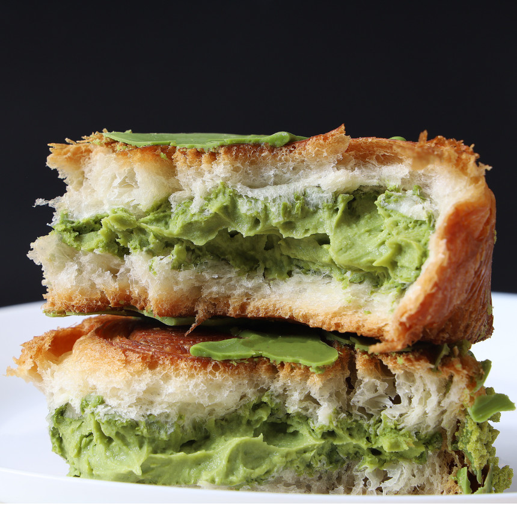
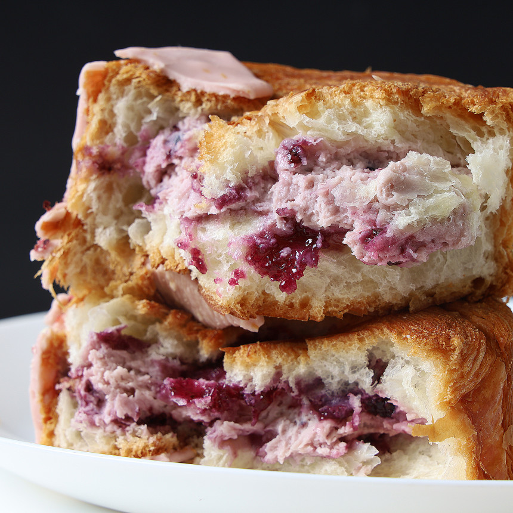
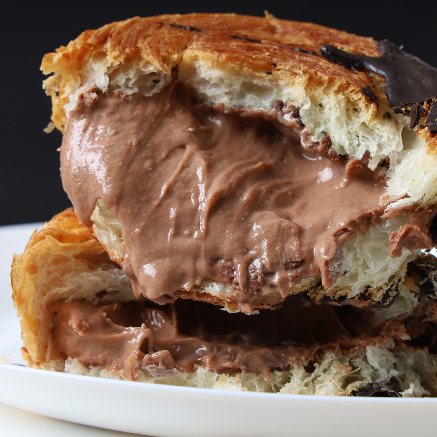
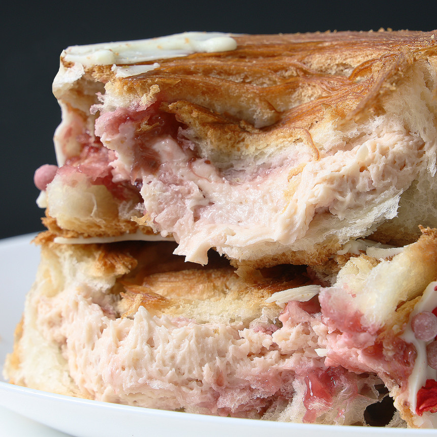

<html>
    <body>
        <!-- 
            1~4 사이의 숫자를 입력하면 해당 번호 이미지 출력
            취소 버튼 클릭시 취소했습니다 출력
            그 외는 해당 번호만 입력해주세요 출력
         -->

    <script>
        let img = prompt('1~4 사이의 숫자를 입력하세요!!');

        switch (img) {
            case '1':
            document.body.innerHTML = '';
            break;

            case '2':
            document.body.innerHTML = '';
            break;

            case '3':
            document.body.innerHTML = '';
            break;

            case '4':
            document.body.innerHTML = '';
            break;

            default:
            document.body.innerHTML = '<h2>해당 번호만 입력해주세요</h2>';
        }

        if (!img) {
            alert('취소했습니다')
        }
    </script>

    </body>
</html>